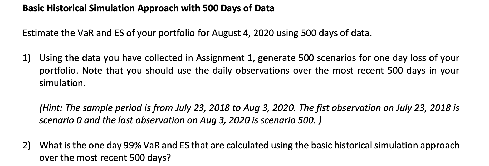
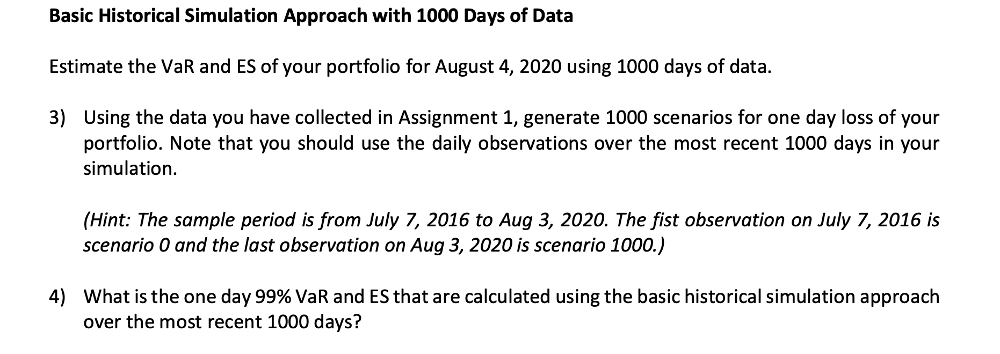
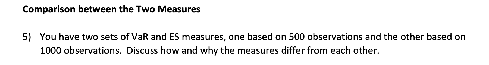
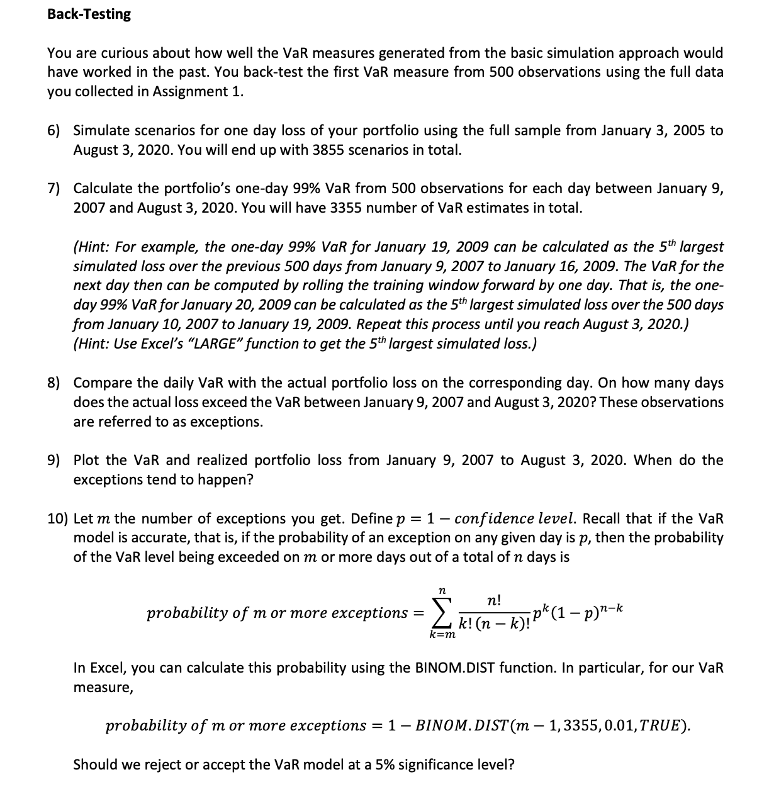
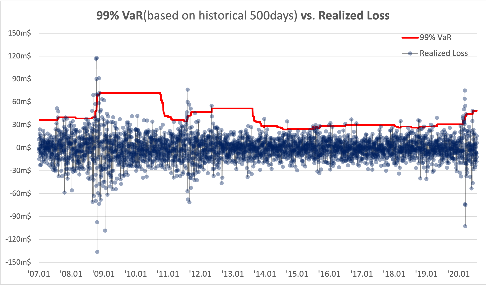
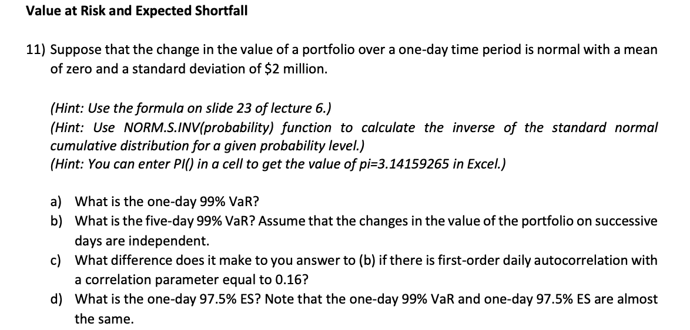
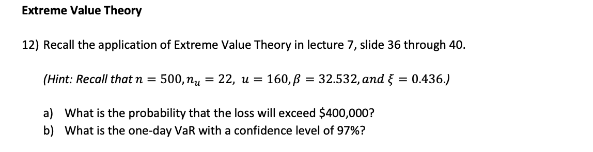

금융시장 리스크관리 과제2
Group 1 ( 김형환, 염지아, 유문선, 이희예, 홍지호 )
Question 1-4 : Basic historical approach


Answer
엑셀 참조 / (2) : 500-days 99% VaR = 48.46, ES = 61.42 (만원)
엑셀 참조 / (4) : 1000-days 99% VaR = 37.46, ES = 50.91 (만원)
Question 5 : Comparison 500 vs. 1000

Answer
먼저, Historical VaR와 ES는 기간 중 포트폴리오 수익률을 고려하여 산출되므로, 산출기간 중 손실을 많이 기록한 거래일이 얼마나 있는지에 따라 결정됩니다.
참조기간(lookback period)가 짧더라도 이례적인 손실을 기록한 거래일이 포함되어있다면 VaR과 ES가 모두 클 확률이 높고, 길더라도 보합장이 지속되었다면 VaR과 ES 모두 낮을 가능성이 높습니다. 즉, 참조기간의 길이는 크게 중요하지 않습니다.
이제, 결과값을 살펴보면 참조기간 500일이 1000일보다 VaR과 ES 모두 높습니다.
500일의 기간은 ’18.7.23 ~ ’20.8.3이며 1000일은 ’16.7.7 ~ ’20.8.3인데, 1% level에서 500일은 상위 5거래일, 1000일은 상위 10거래일의 손실에 영향을 받게 됩니다.
두 기간은 공통적으로 ’20년 코로나19 팬데믹 기간을 포함하는데요, 이 기간에는 증시가 단기간에 급락하면서 포트폴리오가 이례적인 손실을 기록한 거래일이 많았습니다.
특히, 두 참조기간 모두 손실 상위 5개 거래일은 ’20년 상반기입니다.
따라서 참조기간 500일은 해당 5개 손실의 임계값과 평균값을 통해 VaR과 ES를 계산하고, 1000일은 해당 5개 손실과 그보다 낮은 5개의 손실을 이용하여 VaR과 ES를 계산합니다.
동일한 방법론에서 상위 5개의 손실값만들 사용한 500일 VaR과 ES가 높을 수 밖에 없습니다.
만약 중복되지 않는 기간(’16.7.7 ~ ’18.7.22)에 그 이상으로 이례적인 손실이 발생하였다면, 참조기간 1000일의 VaR과 ES가 더 높았을 것 입니다.
Question 5-10 : Back testing

Answer
(6) - (7) : 엑셀 시트 참조
(8) : 49 days
(9)

실제 포트폴리오 손실이 99% VaR을 초과한 날을 기록한 그래프입니다. 주로 ’08년말, ’11년말, ’20년초 3개의 구간에 해당 거래일이 집중되어 있음을 알 수 있습니다.
각 구간은 미국발 서브프라임 금융위기, 유럽발 재정위기, 코로나19 팬데믹 기간에 해당하는데, 모두 증시가 단기간에 급락한 기간이라는 공통점이 있습니다.
이는 VaR 그래프(적색)의 추세에 나타나는데, VaR 산출은 과거 500일의 포트폴리오 수익률에 기반하므로 주가가 급락하여 포트폴리오가 연속적인 손실을 기록하면, 익일 VaR 산출부터 해당 손실이 반영되어 급증하게 됩니다.
각 구간의 시작지점에 이러한 특징이 나타나며, 모두 증시 급락으로 VaR이 계단식으로 상승하였음을 알 수 있습니다.
(10) : Reject. VaR model is NOT significant.
우리의 VaR 모델이 유의하다면, 포트폴리오 손실이 1% VaR을 초과하는 확률은 1%로 수렴할 것 입니다.
데이터의 3355개의 VaR와 포트폴리오 실현 손실, 초과 횟수가 49회임을 이용하여 가설검정을 수행해보겠습니다.
- H0 : VaR is significant. \(\frac{m}{N}<0.01\)
- H1 : VaR is not significant. \(\frac{m}{N}>=0.01\)
실현손실이 VaR을 초과하면 1 아닌 경우 0인 확률변수를 \(X\)라 하면, 우리는 이를 \(p=0.01\)이고 3355번 시행하는 베르누이 분포로 모델링할 수 있습니다.
문제의 식에 따라 산출한 p값은 0.007인데, 이는 3355번 동안 49번 이상 손실이 초과할 확률이 0.007이라는 뜻입니다.
다시 말해, 가설검정에서 p-value가 0.007이므로 5% 수준에서 귀무가설을 기각하고 대립가설을 채택하게 됩니다.
Question 11 : VaR and ES

Answer
\(T-day\;\;VaR_\alpha = \Big(\mu+\sigma\times N^{-1}(\alpha)\Big)\sqrt T\)
\(T-day\;\;ES_\alpha = \Big(\mu+\sigma\frac{e^{-\frac{N^{-1}(\alpha)}{2}}}{\sqrt{2\pi}(1-\alpha)}\Big)\sqrt T\)
(a) $4.65m
(b) $10.40m
(c) $11.82m
autocorrelation이 있는 경우, \(\sqrt T\) 대신 \(\sqrt{T+2(T-1)\rho+2(T-2)\rho^2\dots}\)를 사용
(d) $4.68m
Question 12 : EVT

Answer
문제풀이에 앞서, 극단값 이론(Extreme Value Theory)의 주요 내용을 간단히 정리하겠습니다.
우리가 널리 사용하는 중심극한정리(CLT)는 표본들의 평균의 정규성에 대한 정리입니다.
모집단의 분포를 모르더라도 표본이 충분히 크다면 표본평균이 정규분포를 따른다는 의미입니다.
반면, EVT는 표본들의 극단값에 대한 정리입니다.
마찬가지로 모집단의 분포를 모르더라도, 표본이 충분히 크다면 특정 임계값 이상의 극단값(extreme value)들은 파레토 분포를 따르게됩니다.
확률변수 \(X\)의 오른쪽(right tail) 임계값 \(u\)(대략 95% 수준)에 대해, \(u<y\in X\)인 \(y\)를 극단값으로 정의한다면,
\(y\)에 대한 확률분포는 기존 \(X\)의 확률분포를 이용한 조건부확률로 표현할 수 있습니다.
\(P(x>y)=P(x>u)\times P(x>y|x>u)\) 이를 y에 대하여 정리하면 파레토분포가 됩니다. (Gnedenko)
CDF : \(G_{\xi,\beta}(y)=1-\biggl(1+\frac{\xi}{\beta}y\biggr)^{-\frac{1}{\xi}}\)
PDF : \(g_{\xi,\beta}(y)=\frac{dG}{dy}=\frac{1}{\beta}\biggl(1+\frac{\xi}{\beta}y\biggr)^{-\frac{1}{\xi}-1}\)
여기서, 파레토분포의 형태는 scale \(\beta\)와 shape \(\xi\) 두개의 파라미터에 따라 결정됩니다.
\(X\)가 정규분포라면, \(\xi\)는 0이 됩니다.
일반적으로 일정수준의 임계값 \(u\)를 지정한 후, 주어진 데이터에 최대우도법(MLE)을 적용하여 scale, shape를 추정하게 됩니다.
이후 과거 데이터를 통해 도출된 극단치의 분포를 활용하여 VaR, ES 등을 산출할 수 있습니다.
임계값 \(u\)보다 큰 \(VaR_\alpha\)에 대하여, \(v\in X\)가 \(VaR_\alpha\)보다 클 확률은 두가지로 표현할 수 있습니다.
\(Prob(v>VaR_\alpha) = 1-\alpha\)
EVT의 파레토분포 활용,
\(Prob(v>VaR_\alpha) = P(v>u)\times P(v>VaR_\alpha |v>u)=(1-F(u))\times (1-G_{\xi,\beta}(VaR_\alpha-u))\)
\(\Rightarrow Prob(v>VaR_\alpha) = \frac{n_u}{n}\biggl(1+\frac{\xi(VaR_\alpha-u)}{\beta}\biggr)^{-\frac{1}{\xi}}\)
이 두 식을 연립하여 정리하면,
\[VaR_\alpha\;=\;u+\frac{\beta}{\xi}\biggl\{\Bigl(\frac{n}{n_u}(1-\alpha)\Bigr)^{-\xi}-1\biggr\}\]
유사한 방식으로 ES(Expected Shortfall)을 유도하면,
\[ES_\alpha\;=\;E[v|v>VaR_\alpha]=\frac{VaR_\alpha+\beta-\xi\,u}{1-\xi}\]
이제, 위의 내용을 바탕으로 문제를 풀어보겠습니다.
(a) : 0.16%
위의 \(Prob(v>VaR_\alpha) = \frac{n_u}{n}\biggl(1+\frac{\xi(VaR_\alpha-u)}{\beta}\biggr)^{-\frac{1}{\xi}}\)를 이용하면,
손실이 400,000USD를 초과할 확률 \(P(v>400)=\frac{n_u}{n}\biggl(1+\frac{\xi(400-u)}{\beta}\biggr)^{-\frac{1}{\xi}}\) 입니다.
주어진 파라미터를 이용하여 이를 계산하면, \(P(v>400)\approx 0.16\%\)
(b) : 173.56 ($173,560m)
\(VaR_\alpha\;=\;u+\frac{\beta}{\xi}\biggl\{\Bigl(\frac{n}{n_u}(1-\alpha)\Bigr)^{-\xi}-1\biggr\}\)임을 이용하면,
97% 수준의 1-day VaR는 \(VaR_{0.97}\;=\;u+\frac{\beta}{\xi}\biggl\{\Bigl(\frac{n}{n_u}(0.03)\Bigr)^{-\xi}-1\biggr\}\approx 173.56\)